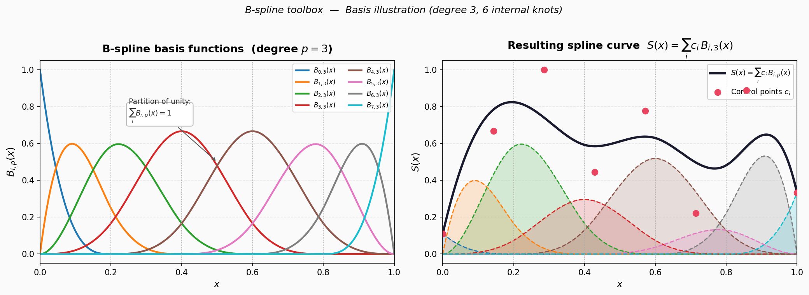

B-Splines
{kind=link}

Bsplines
B-spline toolbox for constructing, evaluating, and fitting spline curves to demographic or actuarial data.
Overview
A B-spline of degree \(p\) over a knot vector \(t_0 \le t_1 \le \ldots \le t_{n+p}\) is defined recursively by the Cox–de Boor recurrence:
A spline curve is the weighted sum of \(n\) basis functions:
where \(c_i\) are the B-spline coefficients (control points).
Key properties:
Local support — \(B_{i,p}\) is non-zero only on \([t_i,\, t_{i+p+1})\), so each coefficient influences the curve only locally.
Partition of unity — \(\sum_i B_{i,p}(x) = 1\) for all \(x\) in the domain.
Non-negativity — \(B_{i,p}(x) \ge 0\) for all \(x\).
Knot vector convention (scipy)
Given \(m\) equally spaced internal knots in \([x_{\min}, x_{\max}]\) and a spline degree \(p\), the full knot vector is built as:
which yields \(n_{\text{basis}} = m + p - 1\) basis functions.
Finite difference penalty (P-splines)
To regularise a fit, the \(k\)-th order difference matrix \(D_k \in \mathbb{R}^{(n-k) \times n}\) is used to penalise rough coefficient sequences:
The first-order difference operator is:
and the \(k\)-th order matrix is obtained by applying \(D_1\) recursively \(k\) times, with coefficients given by:
Visual illustration
Dependencies: numpy, scipy, matplotlib, math.
- morta_nuts2.model.Bsplines.Bsplines.difference_matrix(n, k)[source]
Construct the finite-difference matrix of order k for vectors of length n.
The \(k\)-th order difference matrix \(D_k\) of size \((n-k) \times n\) is defined entry-wise as:
\[(D_k)_{i,\,i+j} = (-1)^j \binom{k}{j}, \quad j = 0, \ldots, k\]so that \((D_k \mathbf{c})_i = \Delta^k c_i\), the \(k\)-th forward difference of the coefficient sequence.
It is used in P-spline regression to penalise roughness:
\[\text{penalty} = \lambda\, \|D_k \mathbf{c}\|^2\]- Parameters:
n (int) – Length of the coefficient vector (number of columns).
k (int) – Order of the finite difference operator.
- Returns:
Difference matrix \(D_k\) of shape
(n-k, n).- Return type:
numpy.ndarray
- Raises:
ValueError – If
k >= n.
Examples
First-order difference matrix for n=4:
D = difference_matrix(4, 1) # [[-1, 1, 0, 0], # [ 0, -1, 1, 0], # [ 0, 0, -1, 1]]
Second-order (curvature) matrix for n=5:
D = difference_matrix(5, 2) # [[ 1, -2, 1, 0, 0], # [ 0, 1, -2, 1, 0], # [ 0, 0, 1, -2, 1]]
- morta_nuts2.model.Bsplines.Bsplines.plot_Bsplines(all_knots, degree, xmin, xmax)[source]
Plot all B-spline basis functions defined by a full knot vector.
For a knot vector \(\mathbf{t}\) of length \(n + p + 1\), there are \(n = |\mathbf{t}| - p - 1\) basis functions \(B_{0,p}, \ldots, B_{n-1,p}\). Each is obtained by setting the corresponding coefficient to 1 and all others to 0:
\[B_{j,p}(x) = \text{BSpline}(\mathbf{t},\, \mathbf{e}_j,\, p)(x)\]- Parameters:
all_knots (array-like) – Full knot vector (including boundary repetitions).
degree (int) – Spline degree \(p\).
xmin (float) – Left boundary of the evaluation domain.
xmax (float) – Right boundary of the evaluation domain.
Note
The function calls
plt.show()directly. For non-interactive use, callplt.savefig()beforeplt.show(), or suppress display withmatplotlib.use("Agg").
- morta_nuts2.model.Bsplines.Bsplines.basis_matrix_from_knots(all_knots, degree, x)[source]
Compute the B-spline basis matrix for a given full knot vector and evaluation points.
Each column \(j\) of the returned matrix contains the values of the \(j\)-th basis function evaluated at all points in x:
\[B[i,\, j] = B_{j,p}(x_i)\]- Parameters:
all_knots (array-like) – Full knot vector \(\mathbf{t}\) (with boundary multiplicity).
degree (int) – Spline degree \(p\).
x (array-like) – Evaluation points.
- Returns:
Basis matrix of shape
(len(x), n_basis)wheren_basis = len(all_knots) - degree - 1.- Return type:
numpy.ndarray
- morta_nuts2.model.Bsplines.Bsplines.Bspline_approx(coeffs, x, degree, m, xmin, xmax)[source]
Evaluate a B-spline approximation from coefficients and an equispaced internal knot grid.
The full knot vector is constructed with spacing \(\delta = (x_{\max} - x_{\min}) / m\) as:
\[\mathbf{t} = \bigl[ x_{\min} - p\,\delta,\; x_{\min} - (p-1)\,\delta,\; \ldots,\; x_{\max} + p\,\delta \bigr]\]so that the spline has support over \([x_{\min}, x_{\max}]\).
The approximated curve is:
\[\hat{y}(x) = B(x)\,\mathbf{c}\]where \(B(x)\) is the basis matrix and \(\mathbf{c}\) the coefficient vector.
- Parameters:
coeffs (numpy.ndarray) – B-spline coefficient vector \(\mathbf{c}\).
x (array-like) – Evaluation points.
degree (int) – Spline degree \(p\).
m (int) – Number of equally-spaced internal knot intervals. Internal knots do not include \(x_{\min}\) or \(x_{\max}\).
xmin (float) – Left boundary of the spline domain.
xmax (float) – Right boundary of the spline domain.
- Returns:
Tuple
(yhat, all_knots, B)whereyhat— approximated values at x, shape(len(x),).all_knots— full knot vector used.B— basis matrix of shape(len(x), n_basis).
- Return type:
tuple(numpy.ndarray, numpy.ndarray, numpy.ndarray)
- morta_nuts2.model.Bsplines.Bsplines.make_bspline_basis(xv, degree, n_knots, xmin=None, xmax=None)[source]
Build the B-spline basis matrix using
scipy.interpolate.BSpline.The full knot vector follows the scipy convention:
\[\mathbf{t} = \underbrace{x_{\min},\,\ldots,\,x_{\min}}_{p},\; t_1,\,\ldots,\,t_{n_{\text{knots}}},\; \underbrace{x_{\max},\,\ldots,\,x_{\max}}_{p}\]where \(t_1, \ldots, t_{n_{\text{knots}}}\) are equally spaced internal knots (including the boundary values).
The number of basis functions is:
\[n_{\text{basis}} = n_{\text{knots}} + p - 1\]The basis matrix entry \(B[i,j]\) is the value of the \(j\)-th basis function at the \(i\)-th evaluation point:
\[B[i,\, j] = B_{j,\, p}(x_i)\]- Parameters:
xv (array-like) – Evaluation points (e.g. ages 0 to 82).
degree (int) – Spline degree \(p\).
n_knots (int) – Number of internal knots, including the two boundary knots \(x_{\min}\) and \(x_{\max}\).
xmin (float, optional) – Left boundary of the spline domain (default:
min(xv)).xmax (float, optional) – Right boundary of the spline domain (default:
max(xv)).
- Returns:
Tuple
(B, knots, n_basis)whereB— basis matrix of shape(len(xv), n_basis).knots— full knot vector.n_basis— number of basis functions.
- Return type:
tuple(numpy.ndarray, numpy.ndarray, int)
Notes
Values outside the support \([x_{\min}, x_{\max}]\) are set to 0 (NaN produced by
extrapolate=Falseare replaced).Examples
ages = np.arange(0, 83) B, t, n = make_bspline_basis(ages, degree=3, n_knots=10) # B.shape == (83, 12) since n_basis = 10 + 3 - 1 = 12
- morta_nuts2.model.Bsplines.Bsplines.eval_bspline_from_coef(coef, xv, knots, degree)[source]
Evaluate a B-spline curve from its coefficient vector.
Given coefficients \(\mathbf{c} = (c_0, \ldots, c_{n-1})\) and a full knot vector \(\mathbf{t}\), the curve is:
\[S(x) = \sum_{i=0}^{n-1} c_i\, B_{i,p}(x)\]- Parameters:
coef (numpy.ndarray) – B-spline coefficient vector \(\mathbf{c}\), length equal to
len(knots) - degree - 1.xv (array-like) – Evaluation points.
knots (array-like) – Full knot vector \(\mathbf{t}\) (with boundary multiplicity).
degree (int) – Spline degree \(p\).
- Returns:
Curve values \(S(x_i)\) at each point in xv, shape
(len(xv),). Points outside the support return 0.- Return type:
numpy.ndarray
Examples
B, knots, n = make_bspline_basis(ages, degree=3, n_knots=10) coef = np.linalg.lstsq(B, y_obs, rcond=None)[0] y_fit = eval_bspline_from_coef(coef, ages, knots, degree=3)